The Faroe Motorcycle Rally
The Faroe Islands, an archipelago of 18 rugged, volcanic islands in the North Atlantic, boast a rich geological history shaped by ancient volcanic activity. This dramatic past has given rise to a stunning landscape of sheer cliffs, rocky coastlines, and rolling green hills. The islands are crisscrossed by a network of curving roads that wind through deep fjords and high mountain passes, offering breathtaking views at every turn. These scenic routes reveal the islands' pristine natural beauty, from tranquil, grassy valleys to the tumultuous North Atlantic waves crashing against the cliffs.
About the Rally
Join us for a 5-day adventure across the Faroe Islands. Discover the most scenic routes and hidden gems along the way. The Great Faroe Rally might be the longest or shortest motorcycle rally ever hosted in the Faroe Islands; either way, we don't care, we just want to do the Faroa islands on our motorbikes. Lots of beautiful miles from the southern tip of Suðuroy to the very northern tip of Viðoy. A motorcycle rally for anyone driving a motorcycle: inappropriate or otherwise, we don’t judge!
Now held over 4,5 stages/days, the rally route carves a unique path across the most beautiful landscapes, mountains, coasts, valleys and TUNNELS in the Faroe Islands. Each day, the group is given ample time to break up camp and have breakfast, no checkpoints are given and the route is provided through an easy to use gpx file.
All riders camp in their own tents, with the riders briefing and dinner at the camp site. We are our own private chefs. You bring your own motorcycle gear. No duffel bag is provided. You are free to choose your own type of luggage!
While we'll be staying in our own tents and go full on "moto camping"; we'll guarantee plenty of time in between riding to enjoy the views. Early stops in the afternoon ensure ample time to set up tents. Leasurely mornings to pack up.
Gallery

 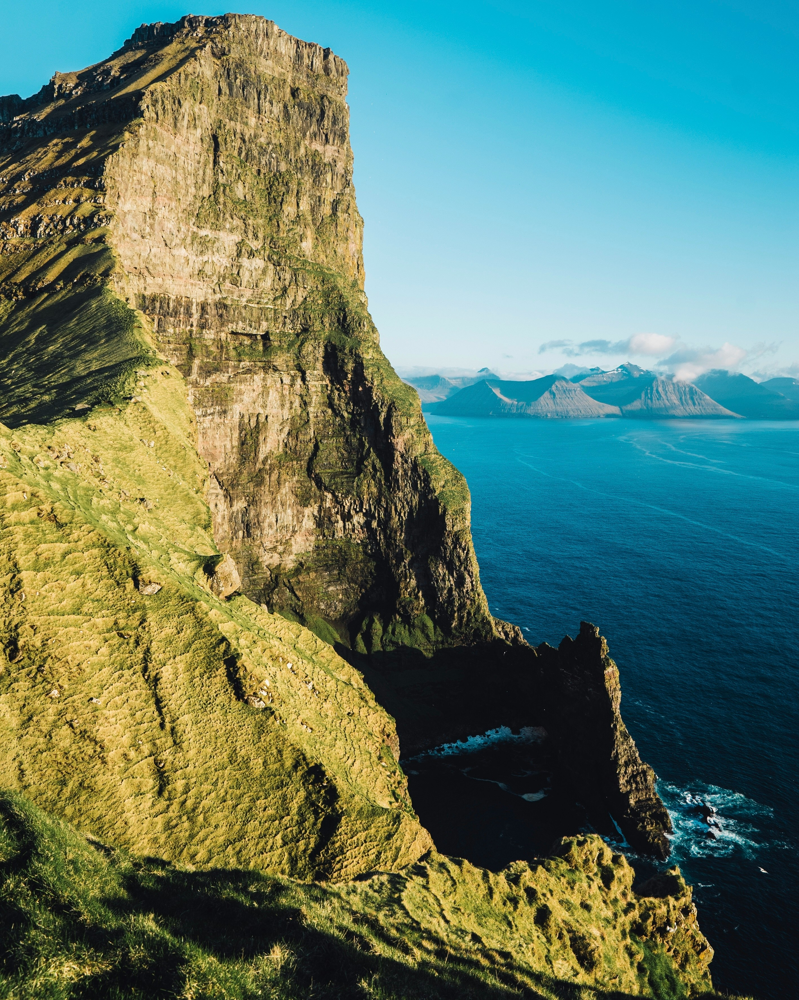
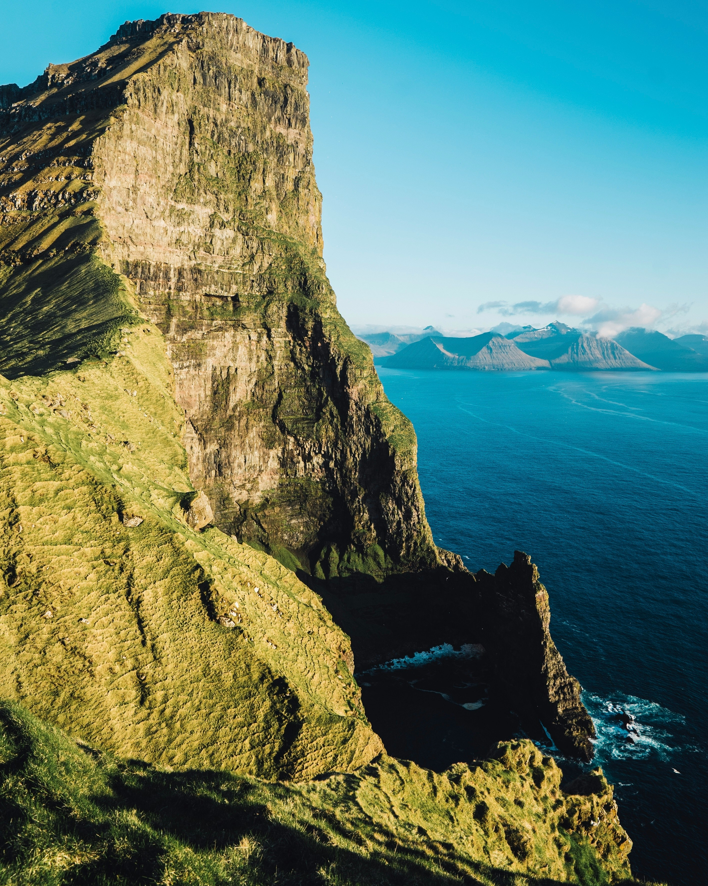

 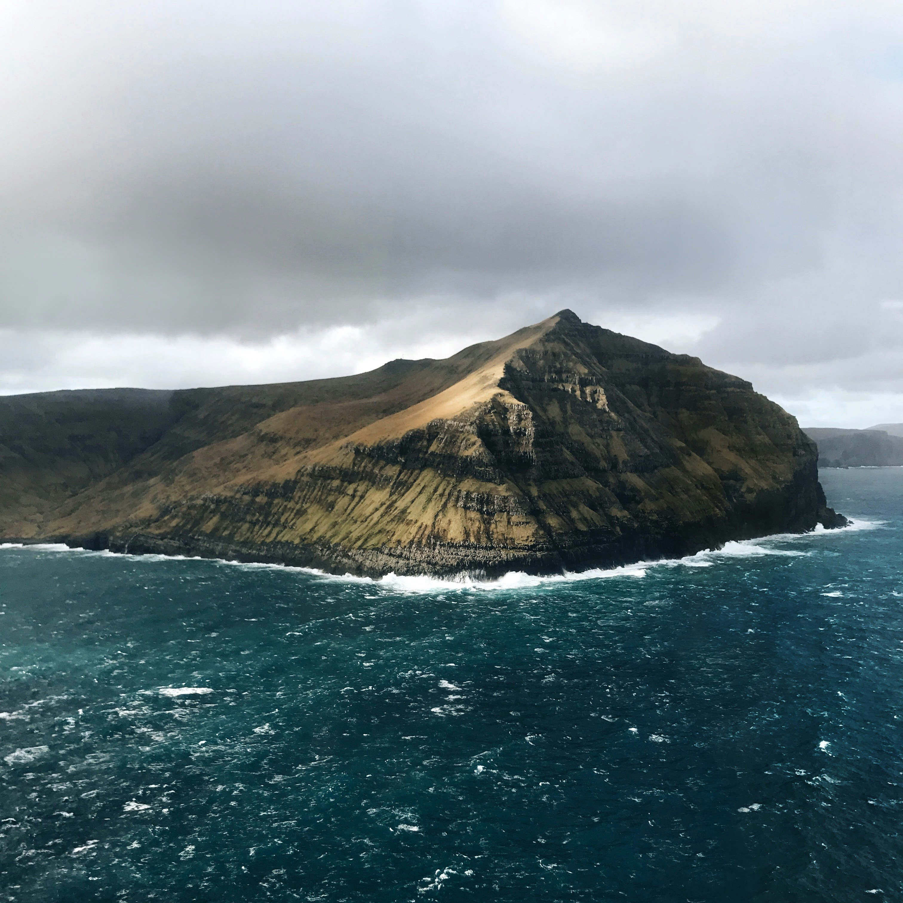
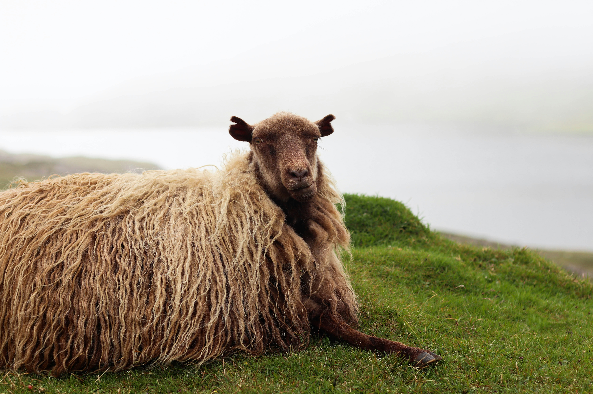
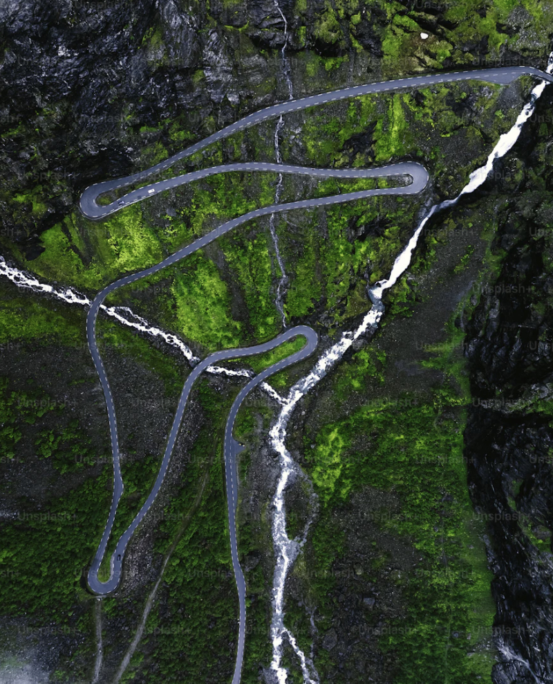
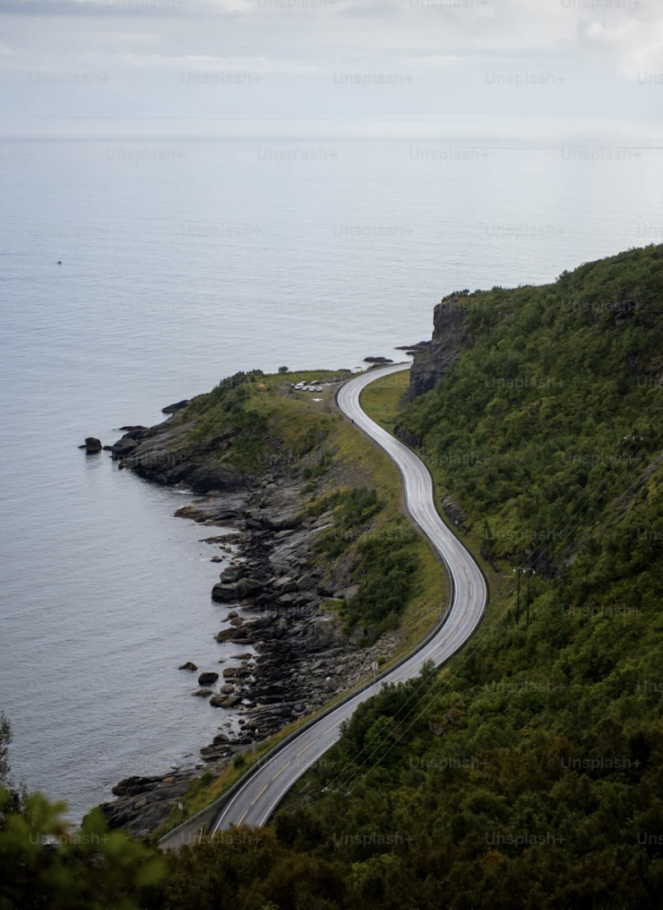
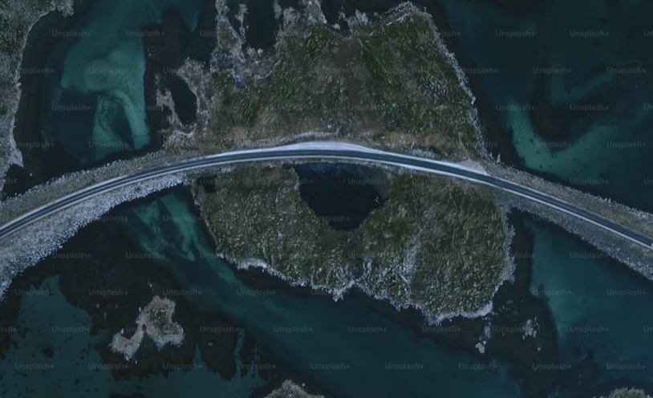
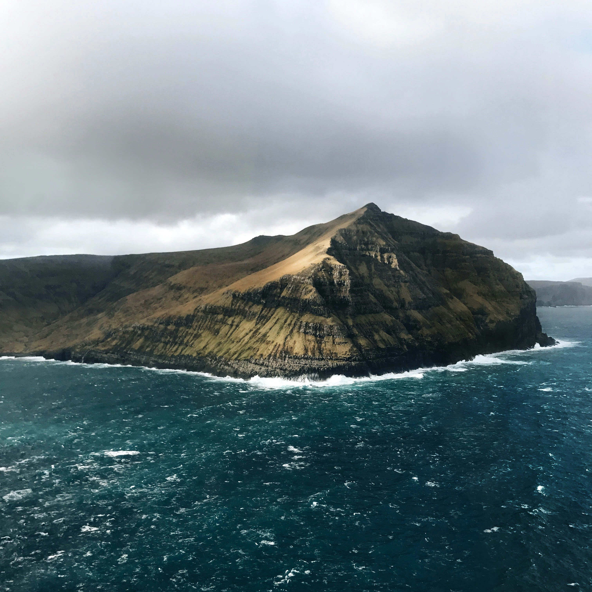
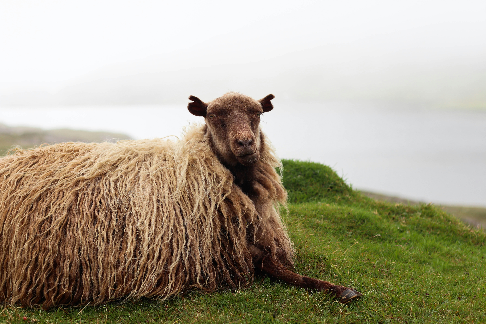
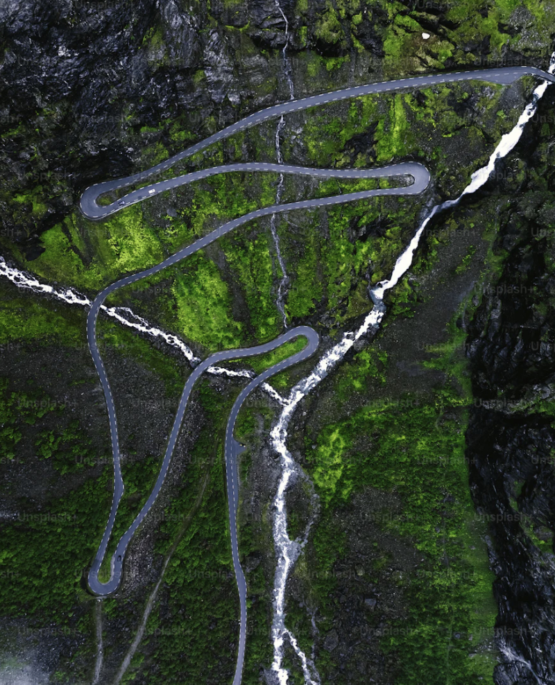
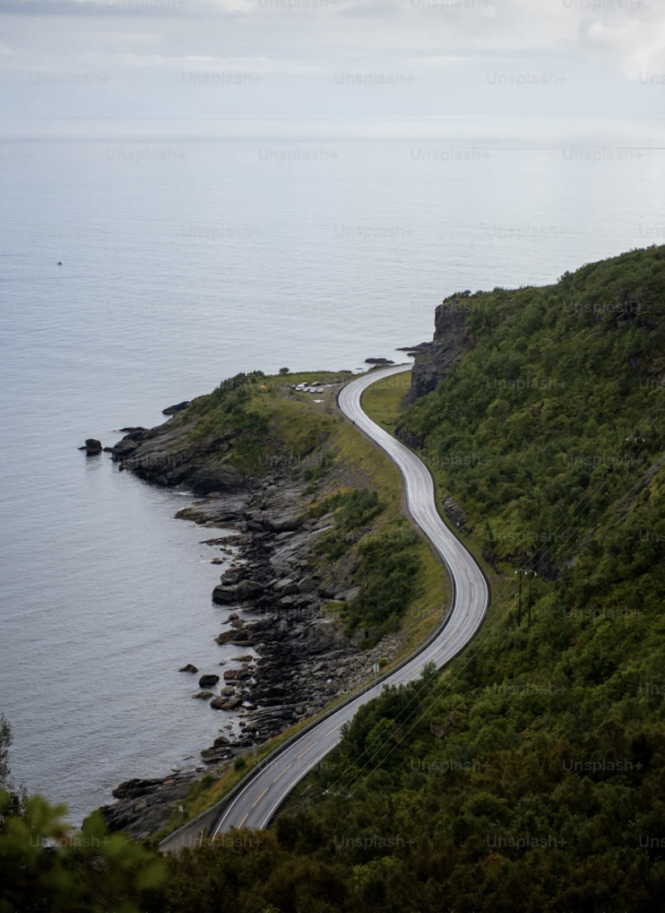
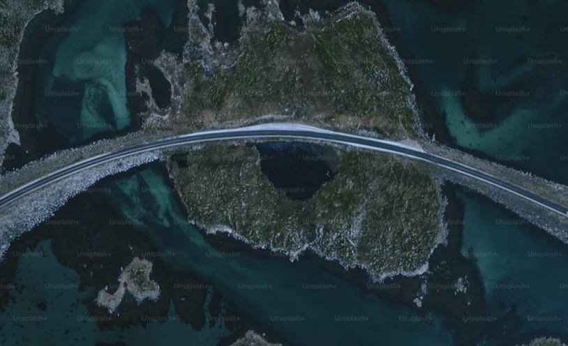
Contact
This is a private event. If you'd like to join, you'll need know one of the team members, own a motorcycle and be admitted at the next general assembly.